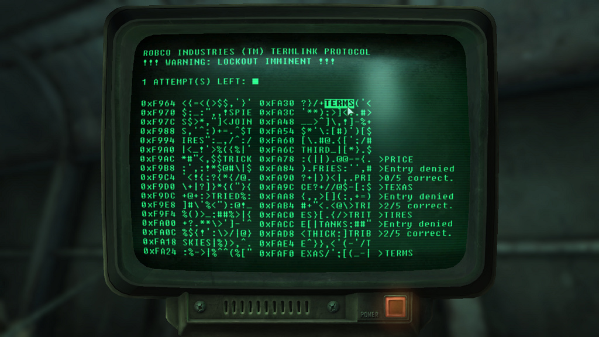
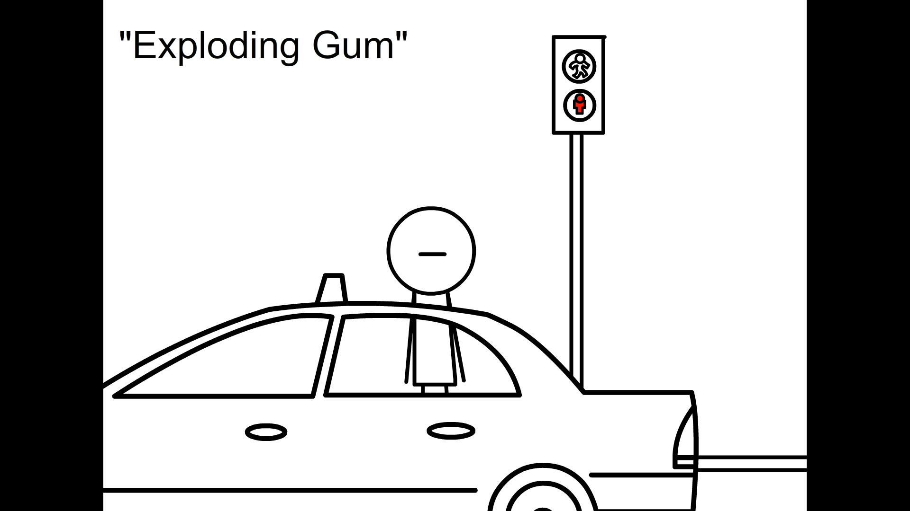
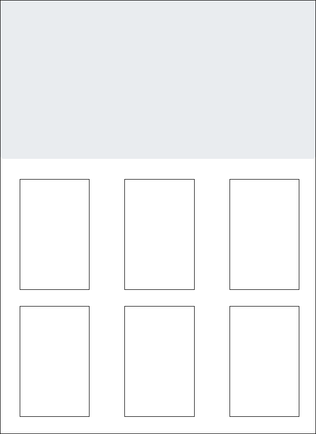
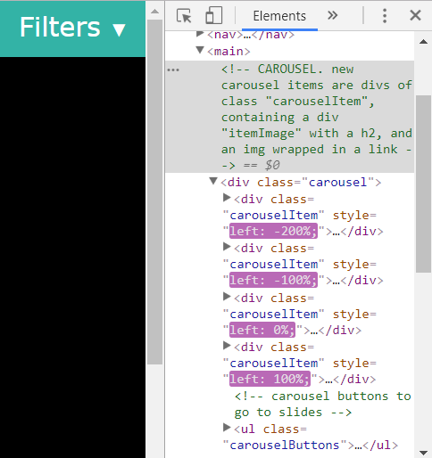
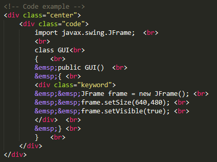
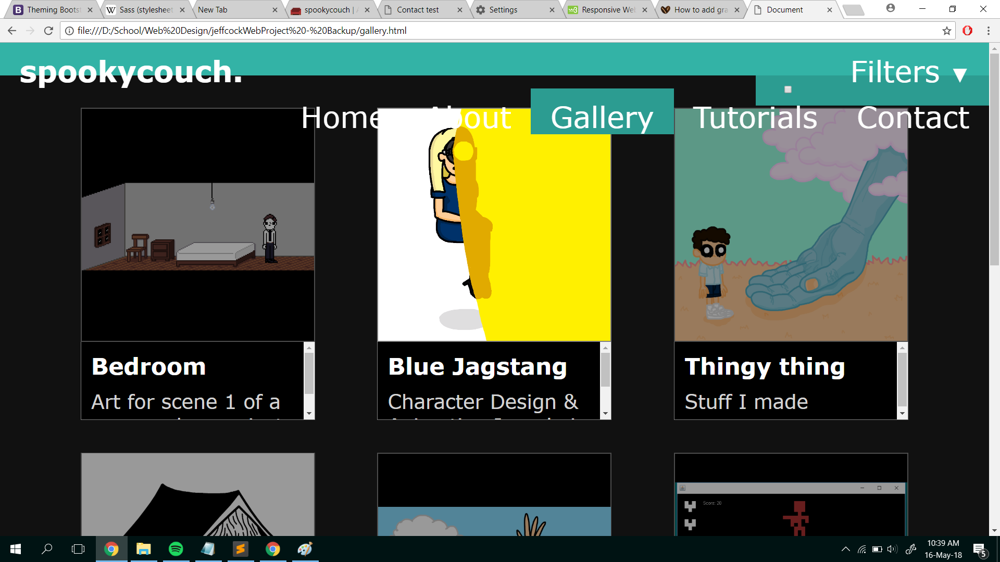
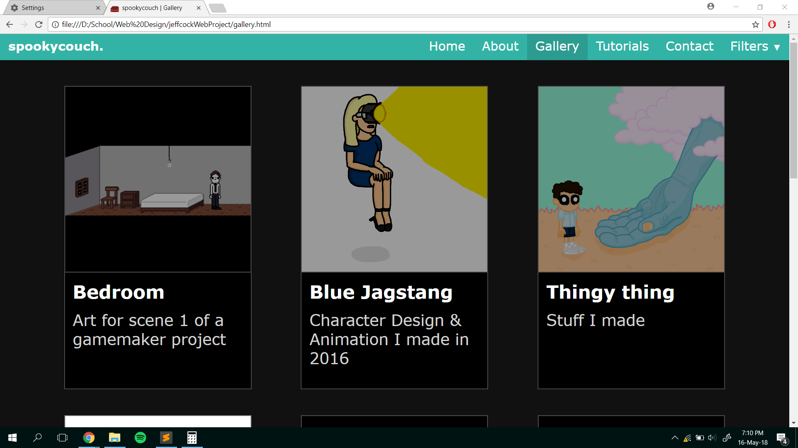

Knowing that we would be working with text, the first images that came to mind were of the computers used in the Alien franchise and Fallout video games. These were akin to personal computers in the 80s by companies such as IBM, which used green phosphor screens for their monitors.

screenshot of Fallout 3 taken from user knowledge2035, Flickr
Incorporating this design into my project sounded like a fun idea, and I thought it would be useful to create visual revision notes for upcoming exams and further studies in university. The notes would take the form of a website with different sections for each subject, along with segments of code and diagrams pertaining to relevant topics. This, however, did not suit the design brief for the project and so I returned to the drawing board. Learning how to program
games in java at the time, my attention then turned towards interactive and digital media.
The Idea
After many years of aspiring to be a game designer I have ammassed quite a few drawings and cartoons, and thought it would be nice to make a portfolio
of all my past works. Meanwhile, an added tutorial on programming video games in java -inspired by my own inquiries into the language- would allow me to implement my earlier ideas and function to bring in more traffic to the website; a dedicated web page being beneficial to anyone interested in the subject, as I had found it difficult to source similar articles online.

Still from Exploding Gum (2010), my first original animation which can be viewed here
I feel that this new concept will enable me to express my creativity in designing a more visual-based website, as well as promote my work as my own client. The java tutorial would also serve as a stylistically different platform for learning coding, covering topics that I had found to be informative and insightful when I first approached the subject myself.
Being a media portfolio website, my aim is to create displays that are vibrant yet emphasise on content. To do this, I intend to create a minimal design that makes effective use of contrasting colours to direct users' attention to important content and information.
Research
Before starting the design process, I researched a few popular websites to see how content is purposefully laid out. Looking at text-heavy websites like facebook and GitBook, I noticed a vertical flow of content with white and gray being the primary colours used in the background.
Observing image heavy-websites such as instagram and pinterest, items displayed in grids that offer a selection of content to choose from. Applications like Netflix and even iTunes (dark theme) had also shown an effective use of colour and contrast, employing dark backgrounds to make content stand out to users.
The basic design functions of these websites were taken into account when I first started creating the layouts and colour schemes of the web pages my project was going to have.
Layouts
The main consideration on the layout for the website was the amount and type of content that would be displayed on each page. To test the appearance of each type of web-page, a proof of concept was produced (non-responsive) with grids made in bootstrap and blogs made using css.
Home & Gallery
The home and gallery pages will be comprised mainly of images and diagrams, meaning a grid-based approach would be quite suitable. A responsive grid could capitalise on the space available on the screen and show a high amount of content in an organised manner. It would also make the website more interactive as content is displayed as a selection rather than in a standard consecutive order.

Screenshot of the grid made in bootstrap (resized for this page). Click here to see the full web page
While I was able to achieve the desired layout using bootstrap, it did require an added degree of specification due to the 12-column format of each row. The built-in responsiveness of the framework also meant that a high amount of reworking would need to be done to create a customised look for mobile devices, so I decided to model grids in the website using css instead.
About & Tutorial
On the other hand, the tutorial and about pages will contain a large amount of text, and as such a portrait, bordered, blog style was chosen for them; a downward flow of content making it easier to read. The mobile versions of these pages would remain almost identical to the desktop ones, while hyperlinks will be created to jump to content lower down on the site for ease of access.
Screenshot of the blog made with css (resized for this page). Click here to see the full web page
Contact
Given the contact page would have the least amount of content with the most variance, I approached my friends in the art department for advice on its layout. I proposed a three-box page where content is divided based on the type of information. They were agreeable on this, while my friend in the media foundation added that readers have a bias towards the right side of documents, magazines usually placing important information there so it is noticed.
Screenshot of the content page made with css (resized for this page). Click here to see the full web page
I first approached the contact page using the box-model, however realised that it would be more difficult to edit the layout later on, and opted for a grid display instead. This would allow me to change the setup of the content and add more items to the grid without having to rework the position of individual boxes.
Colours Used
All pages of the website follow a similar colour scheme, primarily consisting of turquoise, black and white. I have laid out the colours used for each page below to ensure consistency. Turqouise was chosen as the website's "corporate colour" as it is vibrant yet easy on the eyes, fitting with the theme of an art-based website.
Black was chosen as the primary colour for the home, gallery and contact pages to place an emphasis on content, as it allows bright colours to stand out
against the background.
Home page:
Gallery:
Contact:
The about and tutorial pages employ white as the primary colour to maintain a more formal look compared to the others.
Being content-heavy, I feel that the light background makes the pages easier to read as it is similar to text printed on paper that society
has grown used to.
The iterative model was chosen in developing the website, as I had known from the initial design process that it was going to consist of a few pages, each with its own functionality. This model allowed me to test the website early-on, as well as produce fully-working web pages throughout the development cycle. I felt that this model would benefit me personally, as milestones would be much clearer when features are completed one at a time, while I was able to approach testing of different functions at my own pace.
Development was carried out in the following order:
Tutorial
Gallery
Index
Navbar
About
Footer
Contact
The tutorial, gallery and index pages were of the highest priority to me, and as such were worked on first. This is due to the higher amount of content and functionality I knew they were going to need; finishing them earlier allowing for more time to test the website and make sure all was in order.
Responsive design was implemented during development, as I wanted to size elements based on content rather than the device being used. As such, three generic breakpoints were chosen at 480px, 800px and 1100px to start with for each page, where individual pages would be developed for desktops first followed by smaller devices. Breakpoints would then be added and changed according to how content would appear using different media queries.
Blogs - Tutorial & About
When I first approached the blog pages, I used a percentage for all the widths to make responsiveness easier in future. This, however, resulted in some awkward layouts and positioning of elements, and instead opted for fixed widths and media queries to account for devices of different dimensions. This allowed me to set exactly how content will look on different sized screens, such that its would flow naturally on all devices by using breakpoints based on how information was laid out on the page.
The main elements used to create the blogs are the divs of class "blog" and "post". The "blog" class dictates the white fill you see around the right text here on this page, while post separates content by chapters both structurally, as it is contained in individual divs, and visually by adding a gray line to the display.
Tutorial - Coded Examples
In create the coded examples, I first researched the colours of earlier mentioned phosphorous screens from the 80s. Narrowing it down to shades of gray and green, I created new css file with the class "code" that would serve as the virtual screen for coded examples. Rounded borders were added and the colour of the inner text was set to "#00FF33", a shade of green very similar to that of the old computers. To complete the look, I sourced the royalty free IBM Plex Mono font from Google fonts to be used in the code, making it appear as close to the actual computers as possible. I then considered the structure of the coded examples, and added indents, highlighting and comments that would be needed.
Grids- Home & Gallery
The decision to used fixed withs for separate breakpoints made development of the grids in the home and gallery much simpler, as I was simply able to choose a width for each of the three grid-columns that would appear on desktops and add content to them accordingly. Once this was done, I resized the browser until it was small enough that the layout would be broken, and reduced the number of columns on screen at that specific width using media queries. Once the screen was too small for the default grid-column width, it was set to the screen width itself such that it would fit perfectly on handheld devices.
A second grid-size was also added to account for tablet users on portrait and landscape screens with small heights, displaying grid items in one column with a much larger width to make full use of the dimensions of these devices.
Header
To create the header of the website, I first started with a simple div that spanned the entire width of the screen. I knew the navigation buttons would need to be split into two groups; those that collapse in mobile view and those that remain, so divs were created for each of those too. I then went about creating horizontal lists with links and drop-down menus that appeared off-screen.
Following this, a media query was created for smaller devices, where a hamburger icon was set to appear and page navigation buttons displayed vertically, off the screen. Links were made live and the navbar was copied to each page, needing only javascript to be added during implementation that would operate the drop-down and sliding menus.
Footer
I wanted the footer design to be simple, displaying the organisation, my name as the developer and links to social media. As such I went for a three-sector approach, where the first two sectors were alloted a third of screen space - calc(100% / 3) - each while the last were marginalised to the right.
Diagram depicting the footer layout
I found this to be effective as it allowed me to maintain the footer in three equal parts, with the last one being able to host a multitude of content that could be rearranged freely. This proved useful in responsive design as sections will be shifted to a vertical layout, with the last one split into two for text and icons.
Contact
Given the simple layout displayed in the design process, developing the contact page for the website was fairly easy. However, since the grid items were of different sizes, I needed to find a way to suitably display them responsively depending on the size of the screen being used. In doing so, I came up with three different layouts; one each for desktops, tablets, and phones/devices with relatively low heights. Three basic dimensions were chosen to start with, with widths of <800px, 800px> & <1150px, and >1150px. I then tested the page at different sizes to establish breakpoints and create more specific queries between the three.
Coded examples were first made by me in Java based on how appropriate I felt they were in teaching game design. This was then moved over into html to be styled by "code.css", and descriptions were added for each leg of the tutorial. I was at first going to use screenshots to show how the products should look like, but decided interactive applications would garner more attention instead. Given the similarities between Java and Javascript, translating the code over into my document was relatively straightforward, using canvases instead of GUIs and Intervals instead of timers.
Gallery
Photos and descriptions were added to the gallery, followed by the implementation of a modal gallery and a content filter. The modal gallery is a block of html at the start of the document that takes up the entire screen, containing buttons and one of each - image, video and audio - element. Each media element is given an ID, and clicking on one will bring up the modal and set its media to that of the index ID in an array of all the elements on the page. Meanwhile, hovering over an image will cause it to "light up" while all the rest are darkened, until another is hovered over to the same effect.
The filter for the gallery was done separately from the features mentioned above, removing and displaying elements from the page based on the category it was given in its class. To implement this into the modal gallery, an array of items shown had to be created that had items added based on category if they were set to be shown by the filter. This would be sorted to make sure items appear in the correct order, and the array passed to the modal gallery for viewing. The challenge of implementing these features separately will be mentioned later on in the development blog.
Index
Since I did not use bootstrap in creating my website, I had to find a way to create my own carousel to showcase highlights in the homepage. I achieved this by setting each slide in a div of width 100%, positioning one at the top-left of main, while the rest were located off-screen. Javascript could then be used to change the coordinates of the slides, with a transition in css to animate them in and out of the screen. Buttons were also added such that users could choose which slide to display.
Navbar
With the menus already in place at different device sizes, javascript was added such that menus would drop/slide in and out of the screen by changing their absolute coordinates, while users could click outside of the menus to retract them and continue surfing the site to increase intuitiveness. Further script sets the display of a transluscent screen that darkens content outside of hamburger menus, as well as changing the direction of arrows on drop-down menus.
The website logo depicts a couch in low-resolution to give the website a more casual and artistic feel.
About
Although the about page was done later in the development process, I kept a word document aside to list any relevant ideas or challenges faced throughout creating the website. This made it easier to expand on thought processes when it came to writing full documentation about the project's development.
Footer
Links to related school websites were added to the footer, with low-resolution buttons to social media sites that I had drawn to fit the theme of the project.
Contact
Lastly, an embedded google map was added to the contact page, along with a form to subscribe to the proposed mailing list for the website and links to social media. Simple validation of the form was done in html, as pop-ups such as those used in Javascript tend to hamper user experience, while in-built alerts do a great job of alerting users as to what they need to fill in.
I first attempted to link google maps to the iframe by myself using a href, however found that google had blocked this option - presumably to enforce fair use of their product. With other options requiring a paid API, I asked my classmate, Roman, if he was able to get google map support on his site. He directed me to an embed option, in which google provided a specific link that allowed users to display their maps, and the problem was solved.
All hyperlinks were tested in order on the website to ensure they are working. Unlike the usual test plans that deal with normal, abnormal and extreme data, I have devised a much simpler one (Y/N) to ensure that all links are redirecting as they should. Any anomolies will be noted post-testing.
Social Media Links
Location in footer unless otherwise stated.
Website
Location
Index
About
Gallery
Tutorial
Contact
Contact (main)
Facebook
Y
Y
Y
Y
Y
Y
Instagram
Y
Y
Y
Y
Y
Y
Twitter
Y
Y
Y
Y
Y
Y
Bellerbys Computing Foundation Link
Website
Location
Index
About
Gallery
Tutorial
Contact
Bellerbys
Y
Y
Y
Y
Y
Links to other pages within the website
Page
Location
Index
About
Gallery
Tutorial
Contact
Index - Logo
Y
Y
Y
Y
Y
Index - Nav
Y
Y
Y
Y
Y
About
Y
Y
Y
Y
Y
Gallery
Y
Y
Y
Y
Y
Tutorial
Y
Y
Y
Y
Y
Contact
Y
Y
Y
Y
Y
Chapter Jumps
Location
Chapter
Intro
0.5
1
2
3
4
5
6
7
Epilogue
Tutorial
Y
Y
Y
Y
Y
Y
Y
N/A
N/A
Y
About
N/A
N/A
Y
Y
Y
Y
Y
Y
Y
N/A
Responsiveness
Website was designed to be responsive to mobile devices, however a few additional breakpoints cropped up when testing different sizes. Responsiveness was tested up to a minimum of 300px in screen-width, as this is the minimum for most phones today, while most companies design their websites to this specification.
The tutorial and about blog pages were tested first, and it was discovered the test tables above were too big for the screen at smaller widths; font-size was reduced such that it would fit within the designated margins. All other content was displayed as expected at all device sizes, and as such, no further changes were made to the presentation of these pages.
At sreen widths of lower than 400px, the grid items took up more space than the visible screen space on the home and gallery pages. I realised this was because I had used 100vw for the grid item width, making it occupy the extra space covered by the scrollbar. To solve this, I instead used a width of 100%, and set the height to 95vw such that it would maintain a square-like shape. Following this, content appeared as it should at all device sizes.
Contact page was tested at all sizes and the grid items fit accordingly. The mailing list did however appear awkward at width:300px, so the inputs were changed to float left and the box expanded to make it look flush with the rest of the page.
The navbar and footer were also tested at different device sizes. The footer appeared as it should on each page, however the navbar had broken at around 310px in width on the tutorial and about pages due to the size of the "Contents" button. The couch logo size was reduced by 2px below widths of 320px to account for this, the navbar appearing normal up to the minimum screen width afterwards. Drop-down and hamburger menus were tested for each page and appeared in order, no changes were made.
Index- Carousel
I noticed low performance when the carousel was changing slides, and realised that setting the coordinates of all four carousel items individually was inefficient and could place an unnecessary load on the browser.

Screenshot of the change viewed from the inspector
To try and resolve the issue, I placed all the slides into one div such that only one coordinate needed to be changed instead. It also made the code easier to manage as sizing of individual slides would be based on the large slider rather than the carousel itself. Javascript and css was altered accordingly.
While discussing colour schemes with one of my teachers, Ms Musgrove, she pointed out that white text on a black background may be easier to read in some cases, such as where the reader suffers from a visual impairment or in poorly-lit environments. To account for this, I have added a "light switch" that toggles the primary colours of the website between light and dark using javascript, as exemplified below:
The button queries all of the relevant elements in the page and changes their styles accordingly.
Tutorial
During implimentation, divs were used to create the indentations in code examples for the tutorial. It was discovered in testing that selecting text from the examples to be copied into an IDE would result in blocks of code without any indentation, making it hard for users to read and edit them.
Selecting text from the examples indented with divs
As such, the "indent" divs were removed and replaced with spaces for each line. This allowed for better examples to be copied and had also made html easier to read and write as lines would be clearly defined by the number of space entities that preface them, rather than through a series of divs. The indent class was kept to keep comments in a block display with a left margin, while (one space x 2) was used instead of   (two spaces) as java IDEs could not read the latter.

Code examples written in html with spaces for indentation
Once changes were made, coded examples were found to be working fine when compiled and run using an IDE.
Feedback
I asked a few of my peers around school to test the website and gathered their opinions on any improvements that should be made. I also observed how they navigated the website to see if there were any changes that needed to be made to make it more intuitive.
Yuri
I showed the website to my schoolmate from the art department, Yuri, to gather some feedback on the website. She responded that the overall feel of the website was good, however more identity needed to be added to the index. Having made a portfolio herself, she said it was important that readers knew who the portfolio was for when they entered the website, and proposed I display my name and a picture of myself near the top of the page to quickly establish my identity.
A large banner was created for the website that would be placed directly after the carousel, while the "About" grid item was moved further up along the grid in response to her feedback. I feel that her comments were useful as they provide an insight from someone who works closely with portfolios as part of her education.
Alesia
The website was tested by my neighbour and media student, Alesia, and I observed that she was able to navigate the website succesfully, making use of most of the features available without direction. She did however, miss out on the "low light mode" button, and responded that it went unnoticed due to its size. Her feedback was positive, saying that she liked the layout and minimal design of the website, as well as highlighting a good use of colour throughout each page. She added that a brief description and instructions for the gallery may help users to better understand the page and why it was added.
The low light buttons were resized to make them more prominent and noticeable based on observation, while a description was added to the gallery in response to Alesia's feedback.
Ms Musgrove
Lastly, I approached my teacher, Ms Musgrove, for feedback on the design of the website. She mentioned that continuity should be added to the home page, as it seemed that there was no more content below the carousel. Ms Musgrove added that a brief description of the website should be present on the index to inform users of the purpose of the website, while the clickable area of the navigation links towards the bottom of the page should encompass the whole grid item, as it is standard practice by other websites.
The comments were taken into account, and a description was added below the banner to explain the website as well as add continuity to entice users to scroll down. The clickable area of the links were also increased to span entire items as seen on other websites such as codecademy.
A recurring theme in being unable to achieve desired layouts for the website was setting element heights to values that were unaccounted for. This happened due to w3's specifications on calculating height in html elements, varying in a myriad of ways based on different conditions. Often my settings would not satisfy these conditions and cause the sizing of an element to show unexpected results, such as appearing too small or not even displaying at all. As such, I will be covering a couple of examples where I faced this problem and how I overcame it.
When first attempting to create the contact page, I had set a min-height of main and based the grid's height on main by percentage. I was unable to achieve the desired result of the grid, a child element, being the same height as the parent without changing min-height to height, and could not understand why.
After some experimenting, I discovered that the height of the child div was based solely on its content, meaning it had zero height by itself. I then decided to search for an explanation on the internet and was directed to the w3 website, which stated that the calculated height of a child element as a percentage of its parent will be zero if a definite height is not set. With this knowledge, I was able to approach the problem in a different way to solve the layout of the grid.
Another instance of this issue was seen in resizing the index page, where the carousel would change in size however the image would remain the same. I realised this was because I had set the height of the image to a percentage of a flex box, causing it would be ignored on resize. To solve this, I instead set the height relative to viewport (36vw & 45vh) such that it would always be calculated and revalidated.
Integration
Since the website was designed using an iterative model, some work needed to be done when fitting different parts together, as modules were developed individually and not always compatible with each other. This resulted in changes to javascript and css, since there were notable differences in functionality between different pages.
This was most apparent in integrating the filter and lightbox javascript for the gallery, which were both done separately from each other at different points along the development cycle. Many variables were reused between the two scripts, while arrays for filtering images and displaying them did not match. A large amount of reworking was needed to be done as a result, however frequent use of comments and clear indentation made the job much easier as I was able to understand how different variables and functions fit in the program.
Non-default root font sizes
I had set most of my design to be responsive based on pixels, sizing based on media queries on the screen size to change layouts. I had however, until reminded by my teacher, Ms Musgrove, forgotten that people often change root font sizes - especially on phones - to make reading easier. Upon testing my website with a different root font-size, the layout of the navbar was broken. To solve this, I went through the navbar css file and made all measurements absolute, such that the navbar would remain the same regardless of the root font, at a relatively large and readable font size of 24px.

Screenshot of the gallery page with a root font-size set at 30px
Grid content boxes in the home and gallery pages were also affected by the change in font-size, so the rem measurement was applied to the containers to account for extra space needed for larger fonts. The size of the image container remained the same for consistency.

Screenshot of the gallery page with a root font-size set at 30px, post-modification
I felt this was challenging as I had already completed the structure for all of the pages, and thus had to come up with a way to solve the problem without any major expense to the layout of the website. I first researched other websites to see how they tackled the issue, and to my surprise discovered some of the more popular social media sites ignored it altogether and kept all content fixed. I applied this to my navbar, setting fixed dimensions such that font size would not affect its layout. I then needed to think of a way to let the size of the image container stay the same while making the text container relative. Remembering the calc() function, I set the height of each grid item to the sum of the imageContainer's height in px and the remaining textContainer in rem to fix the sizing problem.